RÉSUMÉ DES CARACTÉRISTIQUES DU PRODUIT
ANSM - Mis à jour le : 07/08/2014
ELIGARD 22,5 mg, poudre et solvant pour solution injectable
2. COMPOSITION QUALITATIVE ET QUANTITATIVE
Une seringue pré-remplie de poudre pour solution injectable contient 22,5 mg d'acétate de leuproréline correspondant à 20,87 mg de leuproréline.
Pour la liste complète des excipients, voir rubrique 6.1.
Poudre et solvant pour solution injectable.
Poudre (Seringue B):
Seringue pré-remplie avec une poudre blanche à blanc cassé.
Solvant (Seringue A):
Seringue pré-remplie avec une solution limpide, incolore à jaune pâle.
4.1. Indications thérapeutiques
ELIGARD 22,5 mg est indiqué pour le traitement du cancer de la prostate hormono-dépendant à un stade avancé.
4.2. Posologie et mode d'administration
Posologie pour l'homme adulte
ELIGARD doit être administré sous la responsabilité d'un professionnel de santé ayant les compétences nécessaires pour surveiller la réponse au traitement.
ELIGARD 22,5 mg est administré une fois tous les trois mois, en injection sous-cutanée unique. La solution injectée forme un dépôt médicamenteux solide et assure une libération continue d'acétate de leuproréline pendant trois mois.
En règle générale, le traitement du cancer avancé de la prostate par ELIGARD 22,5 mg doit être poursuivi à long terme et ne doit pas être interrompu en cas de rémission ou d'amélioration.
La réponse au traitement par ELIGARD 22,5 mg doit être surveillée en procédant à des examens cliniques et à l'analyse des taux sériques de l'antigène spécifique de la prostate (PSA). Des études cliniques ont montré que la testostéronémie augmentait au cours des 3 premiers jours de traitement chez la plupart des patients non orchidectomisés et diminuait ensuite en 3 à 4 semaines pour atteindre des valeurs inférieures aux taux de castration médicale. Une fois atteints, ces taux se maintiennent aussi longtemps que le traitement est poursuivi (remontées transitoires de testostérone < 1%). Dans le cas où la réponse d'un patient paraît être sub-optimale, il faut s'assurer que la testostéronémie a atteint des taux de castration ou qu'elle se maintient à ces taux.
Administration
Le contenu des deux seringues stériles pré-remplies doit être mélangé juste avant l'administration d'ELIGARD 22,5 mg par injection sous-cutanée.
Pour la procédure de mélange, voir rubrique 6.6.
Au vu des données chez l'animal, une injection intra-artérielle ou intraveineuse doit absolument être évitée.
Comme pour les autres médicaments administrés par injection sous-cutanée, il est recommandé de changer régulièrement de site d'injection.
Enfants et adolescents
Il n'y a pas d'expérience chez l'enfant (âgé de moins de 18 ans) (voir rubrique 4.3)
Ajustement posologique chez certaines populations particulières de patients
Aucune étude clinique n'a été réalisée chez les patients atteints d'insuffisance hépatique ou rénale.
Hypersensibilité à l'acétate de leuproréline, aux autres agonistes de la GnRH ou à l'un des excipients.
Chez les patients ayant subi précédemment une orchidectomie (comme avec les autres agonistes de la GnRH, ELIGARD 22,5 mg n'entraîne pas de diminution additionnelle du taux de testostérone sérique dans le cas de castration chirurgicale).
ELIGARD 22,5 mg ne doit pas être utilisé en monothérapie chez les patients atteints de cancer de la prostate avec compression médullaire ou métastases vertébrales (voir rubrique 4.4).
ELIGARD 22,5 mg est contre-indiqué chez les femmes et les enfants.
4.4. Mises en garde spéciales et précautions d'emploi
L'acétate de leuproréline, comme les autres agonistes de la GnRH, entraîne une élévation transitoire des concentrations sériques de testostérone, de dihydrotestostérone et des phosphatases acides pendant la première semaine de traitement. Les patients peuvent ressentir une aggravation des symptômes ou voir apparaître de nouveaux symptômes tels que douleurs osseuses, neuropathie, hématurie, obstruction urétérale ou vésicale (voir rubrique 4.8). Ces symptômes cèdent habituellement à la poursuite du traitement.
L'administration associée d'un anti-androgène approprié doit être envisagée 3 jours avant le traitement par leuproréline et poursuivie pendant les deux à trois premières semaines de traitement. Il a été observé que ces modalités permettent de prévenir les conséquences d'une augmentation initiale de testostérone sérique.
Après castration chirurgicale, ELIGARD 22,5 mg n'entraîne pas de diminution supplémentaire de la testostéronémie chez les sujets masculins.
Des cas d'obstruction urétérale et de compression médullaire susceptibles d'entraîner une paralysie avec ou sans complications fatales, ont été rapportés avec les agonistes de la GnRH. L'apparition d'une compression médullaire ou d'une insuffisance rénale impose l'instauration d'un traitement standard de ces complications.
Les patients ayant des métastases vertébrales et/ou cérébrales ainsi que les patients ayant une obstruction des voies urinaires devront être étroitement surveillés pendant les premières semaines de traitement.
Un certain nombre de patients auront une tumeur qui ne sera pas sensible à un traitement hormonal. L'absence d'amélioration clinique malgré une baisse adéquate du taux de testostérone en est un indicateur. Dans ce cas, il est inutile de poursuivre le traitement par ELIGARD 22,5 mg.
Une diminution de la densité osseuse a été rapportée dans la littérature médicale chez les hommes ayant subi une orchidectomie ou ayant été traités par un agoniste de la GnRH (voir rubrique 4.8).
Le traitement anti-androgène augmente de façon significative le risque de fractures secondaires à une ostéoporose. Il n'existe qu'un nombre limité de données à ce sujet. Des fractures secondaires à une ostéoporose ont été observées chez 5% des patients après 22 mois de traitement pharmacologique androgénosuppresseur et chez 4% des patients après 5 à 10 ans de traitement. Le risque de fractures d'origine ostéoporotique est généralement plus élevé que le risque de fractures pathologiques. En dehors d'un déficit prolongé en testostérone, un âge avancé, le tabagisme et la consommation de boissons alcoolisées, l'obésité et l'insuffisance d'exercice physique peuvent aussi favoriser le développement d'une ostéoporose.
Lors de la surveillance après la commercialisation, de rares cas d'apoplexie pituitaire (un syndrome clinique secondaire à un infarctus de la glande pituitaire) ont été rapportés après l'administration d'agonistes de la GnRH, la majorité survenant dans les 2 semaines suivant la première administration, et certaines dans la première heure. Dans ces cas, l'apoplexie pituitaire s'est manifestée sous la forme d'une céphalée soudaine, de vomissements, de troubles de la vision, d'ophtalmoplégie, d'un état mental altéré, et parfois d'un collapsus cardiovasculaire. Une prise en charge médicale immédiate est requise.
Hyperglycémie et diabète : Une hyperglycémie et une augmentation du risque de développer un diabète ont été rapportées chez des hommes traités par des agonistes de la GnRH. Une hyperglycémie peut être due au développement d’un diabète sucré ou à l’aggravation du contrôle glycémique chez des patients diabétiques. Chez les patients traités par un agoniste de la GnRH, il faut surveiller périodiquement la glycémie et/ou l’hémoglobine glyquée (HbA1c) et prendre en charge ces patients selon les recommandations actuelles de traitement de l’hyperglycémie ou du diabète.
Maladies cardiovasculaires : risque accru de développer un infarctus du myocarde, décès par arrêt cardiaque et accident vasculaire cérébral ont été rapportés lors de l’utilisation d’agonistes de la GnRH chez certains patients. Le risque semble faible sur la base des rapports publiés et devra être évalué attentivement en fonction des facteurs de risque cardiovasculaires des patients atteints d’un cancer de la prostate lors du choix du traitement. L’apparition de symptômes et des signes évocateurs de maladies cardiovasculaires doit être surveillée chez les patients traités par un agoniste de la GnRH et traités, conformément aux recommandations en vigueur.
4.5. Interactions avec d'autres médicaments et autres formes d'interactions
Aucune étude pharmacocinétique d'interaction médicamenteuse n'a été réalisée avec ELIGARD 22,5 mg. Il n'existe aucune description d'éventuelles interactions de l'acétate de leuproréline avec d'autres médicaments.
Sans objet.
4.7. Effets sur l'aptitude à conduire des véhicules et à utiliser des machines
Les effets d'ELIGARD 22,5 mg sur l'aptitude à conduire des véhicules et à utiliser des machines n'ont pas été étudiés.
La fatigue, les vertiges et les troubles de la vision étant des effets indésirables possibles du traitement ou la conséquence de la maladie sous-jacente, l'aptitude à conduire des véhicules et à utiliser des machines peut être altérée.
Les effets indésirables observés avec ELIGARD 22,5 mg sont principalement dus à l'action pharmacologique spécifique de l'acétate de leuproréline, à savoir élévations et diminutions des taux de certaines hormones circulantes. Les réactions indésirables les plus fréquemment rapportées sont des bouffées de chaleur, des nausées, un malaise et une fatigue ainsi qu'une irritation locale transitoire au niveau du point d'injection. Des bouffées de chaleur apparaissent chez 58% des patients environ.
Les effets indésirables suivants ont été rapportés au cours des essais cliniques réalisés chez des patients atteints d'un carcinome prostatique à un stade avancé traités par ELIGARD. Les effets indésirables sont classés, par fréquence: très fréquent, (≥1/10), fréquent (≥1/100, <1/10), peu fréquent (≥1/1 000, <1/100), rare (≥1/10 000, <1/1 000) et très rare (<1/10 000), fréquence indéterminée (ne peut être estimée sur la base des données disponibles).
|
Tableau 1: Effets indésirables dans les études cliniques avec ELIGARD |
||
|
|
Infections et infestations |
|
|
|
Fréquent: |
rhino-pharyngite. |
|
|
Peu fréquent: |
infection des voies urinaires, infection cutanée locale. |
|
Troubles du métabolisme et de la nutrition |
||
|
|
Peu fréquent: |
diabète sévère. |
|
|
Affections psychiatriques |
|
|
|
Peu fréquent: |
cauchemars, dépression, diminution de la libido. |
|
Affections du système nerveux |
||
|
|
Peu fréquent: |
vertige, céphalée, hypoesthésie, insomnie, troubles du goût et de l'odorat. |
|
|
Rare: |
mouvements anormaux et involontaires. |
|
Affections vasculaires |
||
|
|
Très fréquent: |
bouffées de chaleur. |
|
|
Peu fréquent: |
hypertension, hypotension. |
|
|
Rare: |
Syncope, collapsus. |
|
Affections respiratoires, thoraciques et médiastinales |
||
|
|
Peu fréquent: |
rhinorrhée, dyspnée. |
|
Affections gastro-intestinales |
||
|
|
Fréquent: |
nausées, diarrhée. |
|
|
Peu fréquent: |
constipation, bouche sèche, dyspepsie, vomissements. |
|
|
Rare: |
flatulence, éructation. |
|
Affections de la peau et du tissu sous-cutané |
||
|
|
Très fréquent: |
ecchymoses, érythème. |
|
|
Fréquent: |
prurit, sudation nocturne. |
|
|
Peu fréquent: |
sueur froide, hypersudation. |
|
|
Rare: |
alopécie, éruption cutanée. |
|
Affections musculo-squelettiques et systémiques |
||
|
|
Fréquent: |
arthralgie, douleur des membres, myalgie. |
|
|
Peu fréquent: |
dorsalgie, crampe musculaire. |
|
Affections du rein et des voies urinaires |
||
|
|
Fréquent: |
diminution de la fréquence de miction, miction difficile, dysurie, nycturie, oligurie. |
|
|
Peu fréquent: |
spasmes de la vessie, hématurie, aggravation de la fréquence urinaire, rétention urinaire. |
|
Affections des organes de reproduction et du sein |
||
|
|
Fréquent: |
sensibilité mammaire, atrophie testiculaire, douleur testiculaire, stérilité, hypertrophie mammaire. |
|
|
Peu fréquent: |
gynécomastie, impuissance, troubles testiculaires. |
|
|
Rare: |
douleur mammaire. |
|
Troubles généraux et anomalies au site d'administration |
||
|
|
Très fréquent: |
fatigue, brûlure au site d'injection, paresthésie au site d'injection. |
|
|
Fréquent: |
malaise, douleur au site d'injection, hématome au site d'injection, picotements au site d'injection, rigidités, faiblesse. |
|
|
Peu fréquent: |
prurit au site d'injection, léthargie, douleur, fièvre. |
|
|
Rare: |
ulcération au site d'injection. |
|
|
Très rare: |
nécrose au site d'injection. |
|
Affections hématologiques et du système lymphatique |
||
|
|
Fréquent: |
perturbations hématologiques. |
|
Investigations |
||
|
|
Fréquent: |
augmentation de la créatinine phosphokinase sanguine, prolongation du temps de coagulation. |
|
|
Peu fréquent: |
augmentation de l'alanine aminotransferase, augmentation des triglycérides sanguins, augmentation du temps de prothrombine, prise de poids. |
D'autres événements indésirables ont été rapportés en général dans le cas d'un traitement par l'acétate de leuproréline, incluant œdème périphérique, embolie pulmonaire, palpitations, myalgie, hypotonie musculaire, une altération de la sensation cutanée, frissons, vertiges d'origine périphérique, éruption cutanée, amnésie et troubles de la vision. Un infarctus d'une apoplexie pituitaire pré-existante a été rarement décrite après administration d'un traitement par agoniste de la GnRH qu'il soit à action immédiate ou prolongée. De rares cas de leucopénie et de thrombopénie ont été signalés. Des modifications de la tolérance au glucose ont été rapportées.
Les événements indésirables locaux rapportés après injection d'ELIGARD sont similaires à ceux associés à des produits similaires injectés par voie sous-cutanée.
Généralement, ces événements indésirables localisés survenant après une injection sous-cutanée sont légers et décrits comme étant de courte durée.
Variations de la densité osseuse
Une diminution de la densité osseuse a été rapportée dans la littérature médicale chez les hommes ayant bénéficié d'une orchidectomie ou ceux traités par un agoniste de la GnRH. Il est probable qu'un traitement à long terme par leuproréline révèle des signes d'aggravation d'ostéoporose, en ce qui concerne l'augmentation du risque de fracture d'origine ostéoporotique (voir rubrique 4.4).
Accentuation des signes et symptômes de la maladie
Le traitement par l'acétate de leuproréline peut entraîner une accentuation des signes et symptômes de la maladie au cours des premières semaines de traitement. Une aggravation des affections telles que métastases vertébrales et/ou obstruction urinaire ou hématurie peut faire apparaître des problèmes neurologiques tels que faiblesse et/ou paresthésies des membres inférieurs ou une accentuation des symptômes urinaires.
Déclaration des effets indésirables suspectés
La déclaration des effets indésirables suspectés après autorisation du médicament est importante. Elle permet une surveillance continue du rapport bénéfice/risque du médicament. Les professionnels de santé déclarent tout effet indésirable suspecté via le système national de déclaration : Agence nationale de sécurité du médicament et des produits de santé (Ansm) et réseau des Centres Régionaux de Pharmacovigilance - Site internet: www.ansm.sante.fr.
L'emploi abusif et le surdosage volontaire avec ELIGARD 22,5 mg sont peu probables. Aucun cas d'emploi abusif ou de surdosage n'a été rapporté en pratique clinique avec l’acétate de leuproréline, mais si une exposition excessive se produisait, la surveillance du patient et l'administration d'un traitement symptomatique adjuvant sont recommandées.
5. PROPRIETES PHARMACOLOGIQUES
5.1. Propriétés pharmacodynamiques
Classe pharmacothérapeutique: analogues de l'hormone entraînant la libération de gonadotrophine Code ATC: L02AE02
L'acétate de leuproréline est un nonapeptide de synthèse, agoniste de l'hormone naturelle de libération des gonadotrophines (GnRH) qui, en cas d'administration prolongée, entraîne une inhibition de la sécrétion des gonadotrophines hypophysaires et une suppression de la synthèse des stéroïdes testiculaires chez l'homme.
Cet effet est réversible à l'arrêt du traitement médicamenteux. Cependant l'agoniste possède une action plus puissante que l'hormone naturelle et le temps nécessaire pour restaurer les taux peut varier selon les patients.
L'administration d'acétate de leuproréline entraîne une élévation initiale des taux circulants d'hormone lutéinisante (LH) et d'hormone de stimulation folliculaire (FSH), responsables d'une élévation transitoire chez l'homme des concentrations de stéroïdes d'origine gonadique, testostérone et dihydrotestostérone. L'administration continue d'acétate de leuproréline entraîne une diminution des taux de LH et de FSH. Chez l'homme, la testostérone diminue en-dessous du seuil de castration (≤ à 50 ng/dL). Ces diminutions apparaissent trois à cinq semaines après l'instauration du traitement. Les taux moyens de testostérone à six mois sont 10,1 (± 0,7) ng/dL, comparables aux taux observés après orchidectomie bilatérale. La testostéronémie de tous les patients qui ont reçu la dose de 22,5 mg de leuproréline dans l'étude clinique pivotale a atteint des taux de castration à 5 semaines; 99 % l'ont atteint à J28. Chez la grande majorité des patients, les taux de testostérone étaient en dessous de 20 ng/dL: le bénéfice clinique de ces taux faibles n'a pas encore été établi. Les taux de PSA diminuent de 98 % après six mois.
Des études à long terme ont montré que la poursuite du traitement maintenait la testostéronémie à des valeurs inférieures au seuil de castration pendant une période allant jusqu'à sept ans et probablement indéfiniment.
La taille de la tumeur n'a pas été mesurée directement pendant le programme d'étude clinique mais on a observé une réponse indirecte de la tumeur comme l'indique une réduction de 98 % du taux moyen de PSA avec ELIGARD 22,5 mg.
5.2. Propriétés pharmacocinétiques
Absorption
Chez les patients atteints d'un cancer avancé de la prostate, les concentrations sériques moyennes de leuproréline augmentent après l'injection initiale et atteignent 127 ng/mL après 4,6 heures (Cmax). Après l'augmentation initiale survenant après chaque injection (phase plateau observée après chaque injection du 3ème au 84ème jour), les concentrations sériques restent relativement constantes (0,2 - 2 ng/mL). Il n'existe aucun signe d'accumulation au cours de l'administration répétée.
Distribution
Le volume moyen de distribution de la leuproréline à l'état d'équilibre après une administration intraveineuse en bolus à des volontaires sains de sexe masculin était de 27 litres. In vitro, la liaison aux protéines plasmatiques humaines varie entre 43% et 49%.
Elimination
Chez des volontaires sains de sexe masculin, l'administration intraveineuse en bolus de 1 mg d'acétate de leuproréline a entraîné une clairance systémique moyenne de 8,34 L/h, avec une demi-vie d'élimination terminale d'environ 3 heures selon un modèle à deux compartiments.
Aucune étude d'excrétion du médicament n'a été réalisée avec ELIGARD.
Aucune étude sur le métabolisme d'ELIGARD n'a été réalisée.
5.3. Données de sécurité préclinique
Les études pré-cliniques avec l'acétate de leuproréline ont montré des effets sur le système de reproduction des deux sexes, effets attendus compte-tenu du profil pharmacologique connu du principe actif. Ces effets se sont révélés réversibles après l'arrêt du traitement et une période appropriée de régénération. L'acétate de leuproréline n'a pas révélé d'activité tératogène. Une embryotoxicité/létalité a été observée chez le lapin, liée aux effets pharmacologiques de l'acétate de leuproréline sur le système reproductif.
Des études de cancérogénicité ont été réalisées chez le rat et la souris pendant 24 mois. Chez le rat une augmentation dose-dépendante des apoplexies pituitaires a été observée après administration sous-cutanée aux doses de 0,6 à 4 mg/kg/jour. Aucun effet de ce type n'a été observé chez la souris.
L'acétate de leuproréline et la formulation 1 mois ELIGARD 7,5 mg ne se sont pas révélés mutagènes lors de tests réalisés in vitro et in vivo.
|
Poly (D, L-lactide co-glycolide) (25:75). |
|
|
|
N-méthylpyrrolidone. |
|
Poudre (seringue B): |
Aucun excipient. |
La leuproréline contenue dans la seringue B doit être mélangée uniquement avec le solvant de la seringue A et ne doit pas être mélangée à d'autres médicaments.
Après première ouverture du plateau, la poudre et le solvant pour solution injectable doivent être immédiatement utilisés pour reconstituer le médicament et l'administrer au patient.
Une fois reconstitué : administrer le produit immédiatement, la viscosité de la solution augmentant avec le temps.
6.4. Précautions particulières de conservation
A conserver au réfrigérateur (entre 2°C et 8°C).
A conserver dans l'emballage extérieur d'origine, à l'abri de l'humidité.
6.5. Nature et contenu de l'emballage extérieur
Deux seringues pré-remplies en polypropylène/copolymère d’oléfine cyclique, l'une contenant la poudre (seringue B) et l'autre contenant le solvant (seringue A). Les seringues comportent toutes deux un système permettant le mélange.
La seringue A possède un piston dont l’extrémité est en caoutchouc thermoplastique et est fermée avec un capuchon Luer-Lok en polyéthylène ou polypropylène. L’extrémité de la seringue et les extrémités des deux pistons de la seringue B sont composés de caoutchouc chlorobutyle.
Les présentations suivantes sont disponibles :
· Un kit consistant en deux plateaux thermoformés dans une boîte en carton. Un plateau contient une seringue A pré-remplie en polypropylène, un piston à tige longue et un sachet de dessicant. L’autre plateau contient une seringue B pré-remplie en copolymère d’oléfine cyclique, une aiguille stérile 20 gaugée et un sachet de dessicant en silicone.
· Une boîte grand modèle contenant 2 kits de 2 seringues pré-remplies en polypropylène/copolymère d’oléfine cyclique (1 seringue A ; 1 seringue B).
Toutes les présentations peuvent ne pas être commercialisées.
6.6. Précautions particulières d’élimination et de manipulation
Laisser le produit se réchauffer à température ambiante.
Merci de préparer en premier le patient pour l’injection, puis la préparation du produit, en suivant les instructions ci-dessous.
Etape 1 : Ouvrir les deux plateaux (déchirer le papier aluminium par le coin reconnaissable par une petite bulle) et vider le contenu sur un plan de travail propre [deux plateaux, contenant la seringue A (Figure 1.1) et la seringue B (Figure 1.2)]. Jeter les sachets de dessicants.
Etape 2 : Tirer d’un coup sec, sans dévisser, le piston bleu à tige courte de la seringue B (Figure 2). Le bouchon gris attaché au piston bleu doit venir en même temps. Puis jeter ces derniers.
Ne pas essayer de mélanger le produit avec les deux bouchons gris en place dans la seringue B.
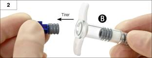
Etape 3 : Visser doucement le long piston blanc dans le bouchon gris restant dans la seringue B. (Figure 3).
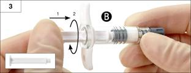
Etape 4 : Retirer la coiffe grise de la seringue B et mettre de côté la seringue (Figure 4).
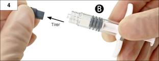
Etape 5 : Tenir la seringue A en position verticale, coiffe transparente en haut pour prévenir les fuites de liquide et dévisser la coiffe transparente de la seringue A (Figure 5).
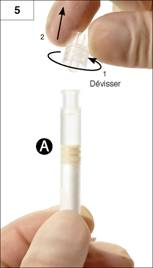
Etape 6 : Toujours en position verticale, relier les deux seringues l'une à l'autre : fixer la seringue B au dessus de la seringue A en poussant et tournant la seringue B dans la seringue A jusqu’à la sécurité (Figures 6a et 6b). Ne pas trop serrer.
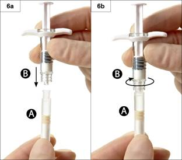
Etape 7 : Retourner les deux seringues connectées entre elles, en continuant à les tenir en position verticale, de façon à avoir la seringue B en bas ; injecter le liquide contenu dans la seringue A dans la seringue B contenant la poudre (acétate de leuproréline) (Figure 7).
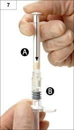
Etape 8 : En position horizontale, pousser et tirer alternativement, doucement les pistons des 2 seringues (une soixantaine de fois au total, ce qui prend environ 60 secondes) afin de mélanger parfaitement le produit et d’obtenir une suspension homogène, visqueuse (Figure 8). Ne pas incliner le système des seringues (sous peine de dévisser en partie les seringues et d’entraîner des fuites).
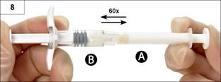
Parfaitement mélangé, le produit apparaitra visqueux avec une gamme de couleur allant de l’incolore, à blanc, à jaune pâle (ce qui inclut toutes les nuances du blanc au jaune pâle).
Merci de noter que le produit doit être mélangé comme décrit ; LE SECOUER NE MELANGERA PAS LE PRODUIT CORRECTEMENT.
Important : Après avoir procédé au mélange, passer à l’étape suivante immédiatement, le produit devenant de plus en plus visqueux avec le temps. Ne pas mettre au réfrigérateur le produit mélangé.
Etape 9 : Tenir les seringues en position verticale, la seringue B étant en bas. Les seringues doivent rester bien assemblées. Transférer tout le produit mélangé dans la seringue B (la seringue large et courte) en poussant le piston de la seringue A et en tirant doucement le piston de la seringue B en même temps (Figure 9).
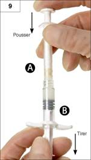
Etape 10 : Séparer la seringue A de la seringue B en continuant à appuyer fermement sur le piston de la seringue A (Figure 10).
S’assurer que le produit ne fuit pas car sinon l’aiguille ne sera pas correctement sécurisée.
Merci de noter : Il pourra rester des petites bulles d'air ou une grosse bulle d’air dans la préparation. Ceci n’est pas gênant.
Au cours de cette étape, merci de ne pas essayer de purger les bulles d’air de la seringue B car le produit pourrait être perdu !
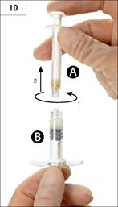
Etape 11 : Tenir la seringue B droite. Ouvrir le conditionnement de l’aiguille sécurisée en retirant le papier au dos de celui-ci et sortir l’aiguille sécurisée. Assembler l’aiguille sécurisée à la seringue B en tenant la seringue droite et en faisant tourner la seringue dans le sens des aiguilles d’une montre afin de fixer parfaitement l’aiguille (Figure 11). Ne pas trop serrer.
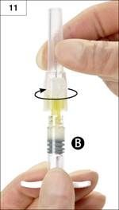
Etape 12 : Retirer le capuchon protecteur de l’aiguille avant administration du produit (Figure 12).
Important : N’enclenchez pas le dispositif de sécurité de l’aiguille avant l’administration.
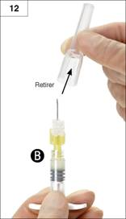
Etape 13 : Avant administration, purger les grandes bulles d’air de la seringue B. Administrer le produit par voie sous cutanée. Assurez-vous que la totalité du produit contenu dans la seringue B a bien été injecté.
Etape 14 : Après injection, verrouiller le dispositif de sécurité en suivant les instructions listées ci-dessous :
1. Fermeture sur une surface plane
Appuyer sur le dispositif de sécurité, levier en bas, sur une surface plane (Figure 14.1a et b) pour recouvrir l’aiguille et verrouiller le dispositif de sécurité.
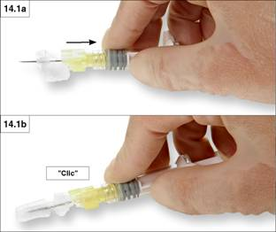
Un « Clic » confirme, de façon sonore et tactile, que le dispositif est verrouillé. En position verrouillée, la pointe de l’aiguille est complètement recouverte (Figure 14.1b).
2. Fermeture avec votre pouce
Placer votre pouce sur le levier et faite glisser le dispositif de sécurité vers la pointe de l’aiguille (Figure 14.2a et b) pour recouvrir l’aiguille et verrouiller le dispositif de sécurité.
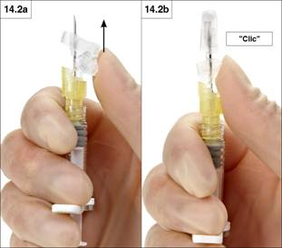
Un « Clic » confirme, de façon sonore et tactile, que le dispositif est verrouillé. En position verrouillée, la pointe de l’aiguille est complètement recouverte (Figure 14.2b).
Etape 15 : Une fois que le dispositif de sécurité est verrouillé, jeter l’aiguille et la seringue immédiatement dans une poubelle appropriée.
7. TITULAIRE DE L’AUTORISATION DE MISE SUR LE MARCHE
ASTELLAS PHARMA S.A.S.
102-116, RUE VICTOR HUGO
IMMEUBLE LE MALESHERBES
92300 LEVALLOIS PERRET
8. NUMERO(S) D’AUTORISATION DE MISE SUR LE MARCHE
· 366 909-2 ou 34009 366 909 2 9 : poudre en seringue préremplie (Copolymère d’oléfine cyclique) et solvant en seringue préremplie (Polypropylène). Boîte de 1.
· 566 566-1 ou 34009 566 566 1 5 : poudre en seringue préremplie (Copolymère d’oléfine cyclique) et solvant en seringue préremplie (Polypropylène). Boîte de 2.
9. DATE DE PREMIERE AUTORISATION/DE RENOUVELLEMENT DE L’AUTORISATION
[à compléter par le titulaire]
10. DATE DE MISE A JOUR DU TEXTE
[à compléter par le titulaire]
Sans objet.
12. INSTRUCTIONS POUR LA PREPARATION DES RADIOPHARMACEUTIQUES
Sans objet.
Liste I.